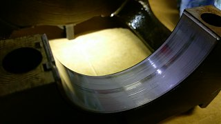
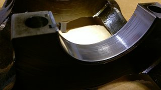
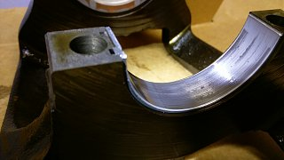
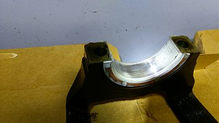
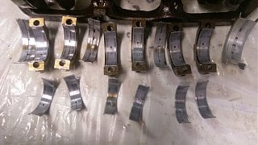
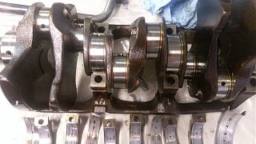
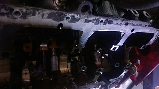
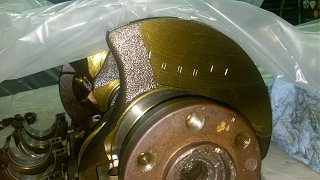

-
Looking for some opinions. #1 & #2 don't look bad in my opinion, #3 looks to have been contaminated by a little bit of dirt, and #4.... i'm not sure if that' thrust surface wear is normal? These are Clevite/Mahle tri-metal bearings.
This engine has just a few hours of run time on it, original oil pump, crankshaft, and rods. Had issue will low oil pressure ~10PSI at idle, 50PSI at 2K/RPM.
Crank Journals are still smooth and shiny.
Will post rod bearings shortly.   Last edited by 88sinZ; 07-23-2016, 12:42 PM. -
Alright here's the rest, journals look good, pump gears looked decent, bores, and head components look good. I'd credit the sacrificial layer of the Tri-metal bearings for saving the bottom end. Ordered a new 2003 VG33ER pump and mahle/clevite bearings. Some bearings i'd call salvageable but i might as well drop in new sets at this point. Also replacing rear main for good measure. The #2 rod bearing had a hair of FOD on the lower surface - highlighting the importance of cleanliness during assembly. Noted some moly lube residue on cam journal lips, so i'm going to assume some of the grime in the oil pan was molygraphite.
I was sold this motor from Taylor Motor Company of Cumberland, VA. They stated this motor had 96k/mi which is why i did not replace the oil pump, i found faint lettering of "TMC 210,072" which may indicate the motor actually has 210k/mi. Thanks assholes.
ETA for complete assembly and testing in 2wks or ASA parts and time allows. Will follow up with Pathfinder vs Frontier oil pump gear comparison and pressure test.
There's pools of oil on the bearings, it's not bronze.  -
All bearings standard sized? Looks pretty good, of course a lot of the main thrust wear is from pushing the clutch in, particularly when there is no or low oil pressure. It would be a good idea to get the crank oil passages cleaned out, that and check all other oil passages.Last edited by 260DET; 07-24-2016, 05:54 PM. -
Can you feel any of it with a fingernail? -
Yeah, i mean they don't look bad - but i don't believe they should look like that with such little run time on them, from my limited knowledge it points to oil starvation. The German crowd seems to be pretty spot on with reading bearings, the thrust bearing wear is also consistent with insufficient oiling from what they report. I have run bore/pipe cleaners up the galleys and they come out clean besides some molygraphite snot. Besides the #2 wear line, no wear can be felt with a finger nail and is not reflected on the crank journals.
Bearings used were STD, plastigauge was spot on .028 - .032 across the board.
Crank Journal grades are: 2, 2, 1, 1
By the grade they're:
#1 = 1.825" - 1.829"
#2 = 1.825" - 1.829"
#3 = 1.825" - 1.829"
#4 = 1.821" - 1.825"
So, it's a pretty tight motor. Crank bearings used were Mahle P/N MS1951P.
Rod journal grades are: 1, 1, 2, 2, 2, 1
The FSM doesn't say anything about grading sizing. STD is 1.502-1.506". Plastigauge was low .020's. spec is 0.014 - 0.055"
Rod bearings used were Mahle P/N CB1591P  -
There are several 'extras' you can do of course, remove the crank oil plugs for a full clean of the passages and replace the knock in plugs with tapped in screwed plugs, polish the journals and so on. If it was mine and a keeper then all the lube passages would be physically inspected and cleaned, not just flushed.
Oh and check the oil filter pressure relief valve, some people remove it and block the hole but that requires regular oil and filter changes to avoid filter blockage which may cause it to burst.Last edited by 260DET; 07-25-2016, 07:06 PM. -
So pulled it, swapped pumps and bearings.
Oil pump gears between late and early 33's are exactly the same. pumps compared were a 1996 VG33E and a DNJ pump spec'd for a 2003 VG33ER
Packed pump with molylube, cranked w/o filter until i got clean oil, refilled.
Cranked it with no fuel and sparkplugs out, built 20PSI of oil pressure. Steady 32-35PSI at temp, idle speed, w/20w-50 VR1

Copyright © 2006–. All rights reserved. Privacy Policy